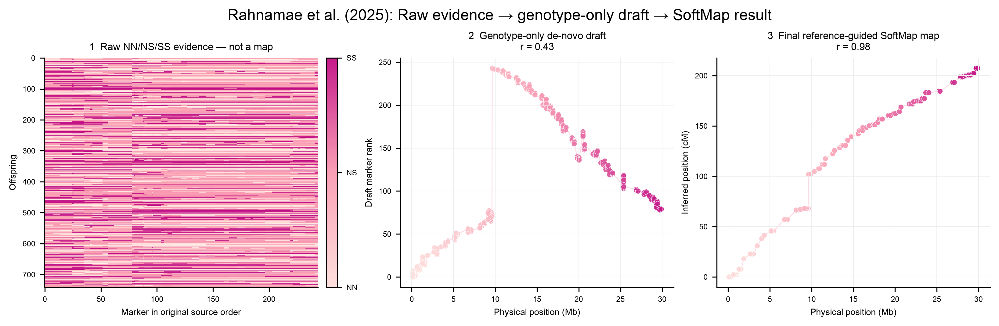
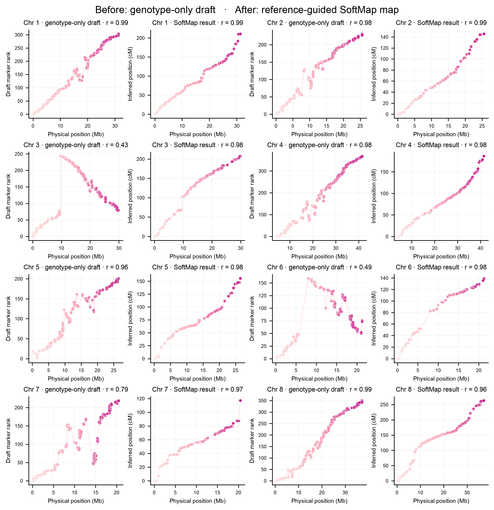

Rahnamae F2 map

This is the raw-to-result view. The first panel is the untouched NN/NS/SS call matrix in source-table order. It is intentionally labeled “not a map”: independent F2 offspring make raw calls look noisy even when markers are correctly ordered. The second panel is the first actual map—the genotype-only de-novo draft. The third is the final reference-guided SoftMap result.
All eight chromosomes

SoftMap now uses the complete Rahnamae F2 information: all 742 offspring, all 2,082 markers, and all NN, NS, and SS calls. Heterozygotes are no longer replaced by unknown binary values.
The comparison shown above is a real before/after:
- “before” is the genotype-only likelihood draft, not a randomized order;
- physical position then supplies the final reference-guided marker order;
- the exact two-locus F2 likelihood estimates recombination fractions;
- the Kosambi map function converts adjacent fractions to cM;
- published genetic positions are used only for the benchmark below.
| Chr | Markers | SoftMap length (cM) | Published length (cM) | Position correlation |
|---|---|---|---|---|
| 1 | 304 | 210.65 | 184.86 | 0.9997 |
| 2 | 232 | 145.40 | 129.14 | 0.9999 |
| 3 | 244 | 207.37 | 207.66 | 1.0000 |
| 4 | 369 | 186.34 | 185.59 | 1.0000 |
| 5 | 202 | 155.46 | 140.11 | 0.9991 |
| 6 | 160 | 139.32 | 138.12 | 1.0000 |
| 7 | 220 | 117.03 | 114.96 | 0.9989 |
| 8 | 351 | 263.07 | 239.71 | 0.9984 |
Correlation is between SoftMap and published genetic coordinates for the same markers. The minimum is 0.9984; map-length error ranges from 0.1% to 13.9%. The comparison uses no fitted scaling to force agreement.
Why the published maps look clean
Rahnamae and colleagues did not publish a raw, randomized marker plot. Their pipeline used complete F2 genotypes, marker filtering and correction, imputation, MSTmap/ASMap ordering, the Kosambi map function, physical orientation, and manual review of several chromosomes. Those steps remove genotyping artifacts and use the assembly to resolve regions where segregation alone is ambiguous.
SoftMap therefore shows the genotype-only draft on the left and the final
reference-guided, genotype-derived cM map on the right. The draft remains in every
result as de_novo_order_rank; it is not manufactured or hidden.
Reproduce it
Or fit one chromosome:
import softmap
data = softmap.contemporary_hybridization_f2(chromosome=1)
mapping = softmap.fit_f2(data, use_physical_scaffold=True)
mapping.plot("rahnamae-chr1.svg")
softmap.plot_f2_three_stage(mapping, "rahnamae-chr1-stages.svg")
print(mapping.summary())
The reproducibility script writes PNG/SVG figures and a JSON metrics file, and fails if coordinate correlation falls below 0.995 or absolute length error exceeds 15%.
Download the verified benchmark metrics
Study repository and source data · Article DOI
SoftMap fits the linkage map only. It does not analyze the study's phenotypes or QTLs.
Independent Arabidopsis RIL confirmation
SoftMap was also tested de novo on four held-out chromosomes from the Moore et
al. grav2 recombinant-inbred-line data, with published coordinates used only
for scoring. It completed all four and had lower mean point-order error than
ASMap/MSTmap (0.01664 versus 0.01819). SoftMap's stability bands compared 83.38%
of informative pairs with 0.00162 inversion error.
This block is retained as a formal failure: mean orientation-free correlation was 0.97242 for both methods, below the frozen 0.98 gate. It therefore demonstrates competitive de-novo RIL ordering and honest uncertainty, not a promoted universal empirical win. Advanced-RIL genetic-distance expansion remains outside the current validated distance scope.